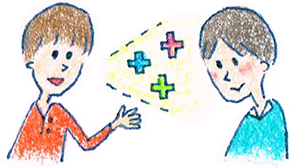

15 : 傾聴トレーニング 名詞を拾って肯定的に返そう
・傾聴トレーニング 名詞を拾って肯定的に返そう

前回は感情のオウム返し、言い換えのオウム返しについて考えていきました。この2つがしっかりできれば傾聴の40％ぐらいは終わりなので
まずは知識として学習して、講座でしっかり練習していきましょう。
今日はもう少し応用的なスキルとして、
「肯定返し法」について考えていきます。
例えばこんな会話があったとします。
「先週鳥取に旅行に行ってね～
自然たっぷりな山の中の温泉がかなり気持ちよくて、
めちゃめちゃ癒されたよ」
と相手がお話ししてくれたとします。
このとき言い換えのオウム返しであれば、
「山に囲まれて浸かると、ほっとするよね」
「山あり森アリの温泉はリフレッシュできるよね」
と適度に言葉を変えて返していきます。
・オウム返しだけではボリュームが少ない
言い換えのオウム返しはとても重要なスキルなのですが、
ボリュームをそこまで出せないという弱点があります。
相手がおしゃべりな場合は極論すると、基本と言い換えのオウム返しで会話が
成立してしまうこともあるのですが、
特に相手があまり話さないタイプの場合はプラスαが必要になります。
そこで、もう少しアグレッシブに自分の主観を交えながら
相手の発言を肯定的に返してみます。
例えばこんな例が挙げられるでしょう
「山に囲まれて浸かると、ほっとするよね（言い換えのみ）」
↓
「山に囲まれて浸かるとほっとするよね（言い換え）
特に自然の中だと日常の疲れを忘れて、
ボケーっとしちゃう。（＋肯定返し）」
「山あり森アリの温泉はリフレッシュできるよね（言い換えのみ）」
↓
「山あり森アリの温泉はリフレッシュできるよね（言い換え）
鳥取は温泉とか砂丘があって意外と見所がたくさんあって
飽きないですよね～（＋肯定返し）」
という感じで返していきます。
言い換えのオウム返しは単純に言葉を変えて返すだけでしたが、
肯定返しはもう少し意味をプラスして返していくイメージですね。
話し手としては肯定してくれたことで、
とても話しやすくなってきます。
皆さんも自分の話を肯定してくれたらとても嬉しいですよね。
相手の発言に対しては適度に肯定的な発言もはさんで
返して行きたいものです。
・すぐに言葉が浮かんでこない方のための基礎トレ
さてさて、肯定的に返す！ということが
大事だということは直感的に理解はと思います。
ただ同時に、
「そんなことは分かっているんだだけど、
できないから困っちゃうんだよなあ」
という皆さんの心の声も聞こえてきそうです。
一般的に売られている本も大体、
抽象的な概念説明で終わっている本がほとんどで、
具体的な練習法の記述がほとんど書かれていません。。。
皆さんにお土産をもって帰って欲しいので
肯定返し法をトレーニングする手法をお伝えしますね！！
・名詞から連想してみよう
基礎トレーニングについてですが、
名詞を思い浮かべて肯定的な面をたくさん考えることが
一番筋肉質で良い練習になります。
例えば・・・
そうですね。私の頭の中になぜか「羊」思い浮かびました。
なんで羊なんでしょう？何十万個という名詞があるなかで
なぜか「羊」が思い浮かびました。神秘的ですね笑
では皆さんにちょっと問題ですが、
「羊」で思い浮かべることを考えてみましょう。
そうですね。5分ぐらい考えてみてください♪♪
なんでもいいですよ。片っ端からとにかく考えてみましょう。
考えてみましたか？
今マウスをグリグリして下に行こうとしましたよね！！
わかっていますよ！！
はい！5分考えてみましょう。
チラシの裏や、机の上にマジックで書いてみても大丈夫ですよ。
さすがに40％ぐらいの方が考えてくれたと思うので、
回答例をみてみましょう。
そうですね・・・私が羊で思い浮かぶ肯定的な面は以下のようになります。
・見ているとほっとする
・モコモコしてかわいい
・泣き声が萌える
・とぼけた感じがキュンと来る
・枕の原料になる
・マザー牧場のマスコットキャラ
・牧場に行ったとき絵になる
・草原で絵になる
・牛乳をしぼりだしてくれる
・お肉がおいしい
・羊がいると犬が大喜び
こんなところでしょうか。
ちなみに私は上記を2分で打ち込みました。
・肯定的な面を組み合わせよう
さてさてこうやって名詞について肯定的な面を
あげる練習をたくさんしておくと、
会話の相手の中に「羊」という単語が出てきたときに
対応力がついてきます。
例えば会話の相手が
「先日神戸の旅行して来たんです。
六甲山に牧場があって羊がたくさんいました。
めちゃめちゃ可愛かったです～」
とお話ししてくれたとします。
これに対して先ほどあげた肯定的な情報を
組み合わせるといくつか返しができそうですね。
「羊ですか～羊は牧場に行ったとき絵になるし、
モコモコしてかわいいですよね」
「羊ですか～羊は見ているとほっとしますし、
泣き声が萌えますよね笑」
という感じで返すことができます。
このように、肯定的返しをするには、
名詞について普段から肯定的な面を考える
トレーニングを重ねることで力をつけていくことができます。
ここから先は地道な戦いです。。。
例えば電車にのっているときに、
目に付いた名詞を拾って肯定的な面を考えてみましょう。
練習問題
手順１
それでは実際に練習してみましょう。今回は2段階の練習です。
まずは「かつサンド」について肯定的な面を10個考えてみましょう。
考えてみましたか？
今マウスをグリグリして下に行こうとしましたよね！！
グリグリグリグリ！
わかっていますよ！！
さあ！考えてみましょう。
さすがに34％ぐらいの方が考えてくれたと思うので、
回答例をみてみましょう。
そうですね・・・私が「かつサンド」で思い浮かぶ
肯定的な面は以下のようになります。
・ 歯ごたえがちょうどいい弾力で食べ応えがある
・ 食べやすい
・ パンの間のソースが食欲をそそる
・ たまにしか食べないのでプレミア感がある
・ 旅行のときに食べるとなぜか2倍おいしく感じる
・ お肉がたっぷりなので男子にはうれしい
・ かつサンドとおにぎりの組み合わせが意外とグッド
・ がっつりボリュームがあるのでおなかいっぱいになれる
・ サンドイッチでおなかいっぱいになれるのはなかなかない
・ パンと別々に食べるよりも一緒に食べるとちょうど良いバランスでおいしい
こんなところでしょうか。
ちなみに私は上記を3分で打ち込みました。
ちょっと苦労しました。
手順２
それでは次に実践的な問題です。
会話の相手が以下のように発言しました。
言い換えのオウム返しと肯定返しをそれぞれ考えてみてください。
「昨日テレビでやっていたんだけど
かつサンドで有名なニクニク屋っていう店があるんだって！
ソースがかかっているのに衣がパリッとしていて、
かなりおいしいらしいよ～！ここから近いらしいから今度いこうよ。」
それではじっくり考えてみましょう。
慣れないうちは5分ぐらいかけても良いと思います。
回答例
→言い換えのオウム返し
「ソースつきなのにサクサクなんて、めちゃ食べたい！」
→肯定返し
「かつサンドはボリュームたっぷりだから、男子にはうれしいし、
たまにしか食べれないからプレミア感があるね！今度いこうぜい」
いかがでしょうか。
このように傾聴をする時は、
言い換えのオウム返しに加えて適度に肯定返しを入れていくと会話が弾んでいきます。
参考にしてみてくださいね！
 |
|